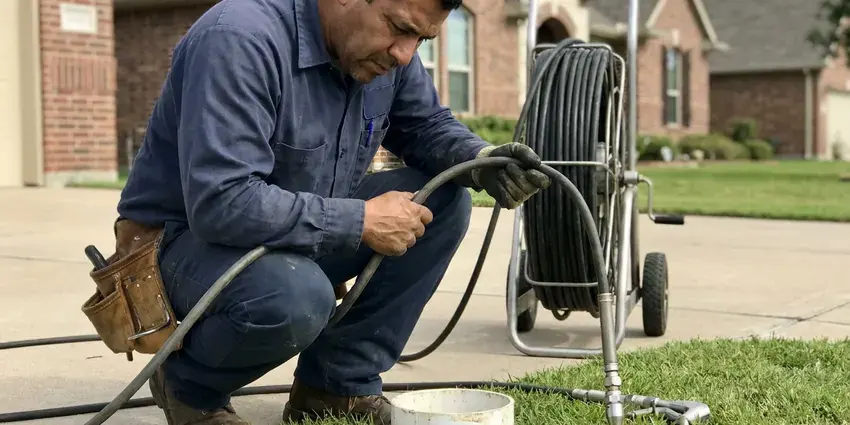

New Construction Plumbing in Murray, UT
Building in Murray, UT? Our crews handle underground, rough-in, top-out and trim so your framers and finishers stay on schedule.
- Fast Project Consultations
- Reliable Installations
- Code Compliant Work
- Licensed Plumbers

Build With Confidence: New Construction Plumbing in Murray, UT.
Send your plan set and BPK Plumbing will price each phase.
Dependable New Construction Plumbing for Your Home in Murray, UT
BPK Plumbing installs complete plumbing systems for new homes and guest suites, starting with the underground and finishing with fixture trim. Nothing gets covered until it passes a test. The same crew that roughs in your flanges comes back to set the toilets, which cuts down on surprises at trim.
Our expertise includes:
- Gas piping and water heater venting, with pressure-tested final connections.
- Tank or tankless water heater installation.
- Sizing and installing the water service and sewer lateral.

Additional Plumbing Maintenance Services in Murray, UT
Our maintenance and specialty plumbing services in Murray, UT catch small problems before they become emergencies.


Customers
Why Choose BPK Plumbing for New Construction Plumbing in Murray, UT?
Site cleanliness counts more than people think. We haul off PEX scraps and glue cans at the end of each day. Nobody on site should be stepping over our cutoffs or moving a coil of PEX to get to their own work. Small thing, but supers notice.
- Plan-Accurate Layouts, Every stub-out is set from your approved plans and cabinet drawings, not guesswork.
- Inspection Ready, We track Utah and local code updates and build to the code edition your inspector uses.
- Experienced Team, Our crews have plumbed homes on slabs and crawlspaces for years and know the usual trouble spots in each.
Citywide Coverage
Rural lots outside Murray often mean well water and a septic system instead of city utilities. That changes the plumbing plan. We pipe from the pressure tank, add sediment filtration if the well calls for it, and run the building drain to the septic designer's specified tank inlet elevation.
Experienced Team
One crew lead stays with your project from underground to trim. You get that lead's cell number. A question about a stub height goes to the person who set it, not to a dispatcher.
Safety-First Approach
We follow OSHA rules on every site. Eye protection and cut gloves are standard. Every gas joint gets leak solution and a pressure test before the meter is set, and no line is left open.
Trusted Certified Murray Plumbing Services Professionals
At BPK Plumbing, we are proud to offer certified plumbing services throughout Murray, UT. Credentials matter in this trade. Every repair, install and maintenance visit follows strict safety and quality rules, and the plumbers doing the work carry recognized industry credentials.
Call Us Now PHCC Plumbing Contractor Recognition
PHCC Plumbing Contractor Recognition Better Business Bureau (BBB) Accreditation
Better Business Bureau (BBB) Accreditation Angi Certified Pro
Angi Certified Pro ISO 9001 Quality Management Certification
ISO 9001 Quality Management CertificationReliable New Construction Plumbing Services in Murray, UT
Gas Piping for New Homes in Murray
We size gas piping for ranges, water heaters, furnaces and fireplaces, plus pool heaters and outdoor kitchens. A shutoff valve goes in within six feet of each appliance. Drip legs go at the furnace and water heater, and the system holds test pressure before the utility sets the meter. The test runs at least ten minutes.

Gas Line Installation for New Homes in Murray
Natural gas or propane, the piping has to match the appliance list. Add up a range, a furnace and a tankless heater and you can pass 350,000 BTU, which often means a 1-1/4 inch main. Our sizing uses every appliance on the plan. Stubs for a future grill or fire pit are cheap now.
Permits and Inspections for New Plumbing in Murray, UT
Most new homes get a plumbing inspection at underground, another at top-out, and a final. We call each one in and meet the inspector on site with the test gauge already on the line. Green tags go to the super. Corrections get fixed within a day so your pour or drywall date holds.
Commercial and Multifamily New Construction in Murray
Small commercial buildouts and multifamily projects often require engineered drawings and backflow testing. Restaurants need a grease interceptor too. Stacked wet walls keep multifamily runs short, and every pipe through a rated wall or floor gets a listed firestop. The firestop gets checked at rough.
Preventing Common Utah Plumbing Issues in New Builds in Murray, UT
New construction in Utah has to account for the ground and the water. Basements are common in Utah homes, which places water heaters, softeners and main drains below grade where leaks can go unnoticed. Sleeves go on every pipe through the slab or foundation so the pipe can move a little without cracking. Mineral deposits shorten the life of tankless and tank water heaters alike, so regular flushing or descaling is worth the time. That shapes what supply pipe we use.
Rough-In and Top-Out Plumbing in Murray, UT
Once framing is up, our crew runs supply and vent lines through the walls and attic. Stub-outs go where the cabinet and tile drawings put them, not where it is easy to drill. Steel nail plates cover any pipe close to a stud face. Shower valves get set to the finished wall depth the tile setter gives us, which saves cutting tile around a trim plate that sits too deep.
Fixture Installation and Trim-Out in Murray, UT
After cabinets and countertops are in, we come back for trim-out. Toilets get new wax or foam rings and closet bolts, faucets get braided supplies, and every angle stop gets checked for drips. Every fixture then runs for several minutes. Drywall mud in a trap is common at trim, and we clear it before final.

In-Wall Plumbing Services in Murray
Top-out is the second half of rough-in, after framing. Supply lines, drains and vents go through the framing and up to the roof, with stub-outs set to the cabinet drawings. Testing comes next. Drains get a water test, filled to the highest fitting, and supply lines hold pressure on a gauge while the inspector walks it.
New Construction Plumbing Near Me in Murray, UT
Your framing crew should not lose a morning waiting on plumbing. Because our crews are nearby, top-out can usually begin the same morning that the framing inspection clears. An idle day still costs the builder.
Utility layouts and inspection habits vary from county to county. We work here every week and know them. Things like burial depth for the water service and where the inspector wants the test gauge are habits we already have.
BPK Plumbing at a Glance
- Fully licensed plumbing team covering Murray, UT
- Same-day appointments and 24/7 emergency response
- Clear written estimates, no hidden fees
- 4.8-star rated by 470+ Utah customers
Murray Map
Murray Information
- Population
- 49,553
- Area codes
- 801/385/435
- Service area
- Murray and towns within a 40 mile drive
- Nearby
- Taylorsville, Millcreek, Sandy, West Jordan
Pipe and layout decisions made before the slab is poured decide how the house performs for decades. Mineral deposits reduce the life of tankless and tank water heaters alike, so regular flushing or descaling is worth the time. Supply material and any softener loop get planned for it.
Expert Services
Call BPK Plumbing for reliable plumbing work done by licensed pros in Murray, UT.
Our Specialized Plumbing Services in Murray, UT
At BPK Plumbing, you get every kind of plumbing service from one company across Murray, UT. From leak detection to full system installs, our team works fast and charges fair prices on homes and commercial properties alike. Explore our core services below:


Our New Construction Plumbing Phases in Murray, UT
Building a new home takes coordination. Here is how BPK Plumbing handles the plumbing side.
Ask for a Quote
Call (385) 543-4073 to talk through your project. We gather the plans and the fixture schedule and book a plan review.
Plan Review
We review your plans with your builder and adjust the layout for shorter runs. Sizing is checked against code.
Rough-In
We install underground and in-wall piping including supply, drain and vent lines. Each phase is tested before inspection.
Frequently Asked Questions About New Construction Plumbing in Murray
Price depends mostly on fixture count and finish level. Two baths in a basic house costs far less than four baths with tankless and recirculation in a custom build. We price from your plans. The bid is split by phase so it compares line by line with other plumbers.
Some jurisdictions let owner-builders plumb a home they will live in. The work still needs permits and inspections. Inspectors apply the same code, and a failed underground can cost more in delay than hiring it out. Many places require a license for gas.
We handle the plumbing permit work and inspections on our scope. Your builder usually pulls the main building permit. We book every plumbing inspection, meet the inspector, and clear corrections before the next trade needs the wall.
PEX-A is our default for water supply in Utah homes. It tolerates hot water and avoids the pinhole leaks copper can develop in some water. Drains are Schedule 40 PVC. Under slabs, we keep joints to a minimum and use long-sweep fittings at every change of direction so a cable or camera can get through later.
Yes, we take single-phase jobs. We can handle only the underground, only top-out, or only trim. If another plumber started the job, we inspect and test what is already in place before we tie into it, because we will not put our name on pipe we have not seen hold pressure.
Expect plumbing to touch the schedule three times. Underground takes one to three days. Top-out runs three to five days, then trim needs one or two days after cabinets and tile are done. Inspections add a day each.
Yes, new construction plumbing in Murray, UT requires a permit and inspections. Plumbing usually rides on the main building permit, though some places issue a separate one to the plumber. Our office handles the plumbing side.
In many homes, yes. Mineral deposits shorten the life of tankless and tank water heaters alike, so regular flushing or descaling is worth the time. A softener loop costs a few hundred dollars during rough-in and much more to retrofit after drywall, since the plumber has to open walls or run pipe through the garage ceiling. We cap it if you are not ready.
Hear From Customers Who Hired Our Plumbing Experts

Daniel K.
A pipe burst in the garage ceiling at 11 at night. Someone answered on the second ring, and the plumber was in my driveway about fifty minutes later. He shut off the main, cut out the split section, and had water back on before 2 am.
Emergency Plumbing · Taylorsville, UT
Mark T.
The floor drain in our office break room backed up every few weeks. The plumber ran a cable, then put a camera down and found roots at a joint about thirty feet out. Seeing it on the screen made the decision easy.
Drain Cleaning · Taylorsville, UTNathan E.
Our tankless heater kept throwing an error code and shutting off mid shower. The tech flushed the heat exchanger, which was full of scale, and replaced a bad flow sensor. Hot water has been steady for half a year now.
Water Heater Repair · West Valley City, UT
Patricia H.
We had a slab leak that two other companies could not find. BPK Plumbing located it in under an hour with a listening device. They rerouted the line through the attic instead of breaking up the floor, so we kept our kitchen tile.
Slab Leak Repair · Murray, UT
Kevin O.
Before buying our house I paid for a sewer camera inspection. BPK Plumbing found a belly in the line that held standing water about forty feet from the cleanout. We used the video to get the sellers to fix it before closing.
Sewer Camera Inspection · South Jordan, UTTyler J.
We bought a taller comfort height toilet for my dad, who just had knee surgery. The plumber pulled the old one, found the flange was cracked, and replaced it before setting the new bowl. Took about two hours.
Toilet Installation · Millcreek, UT